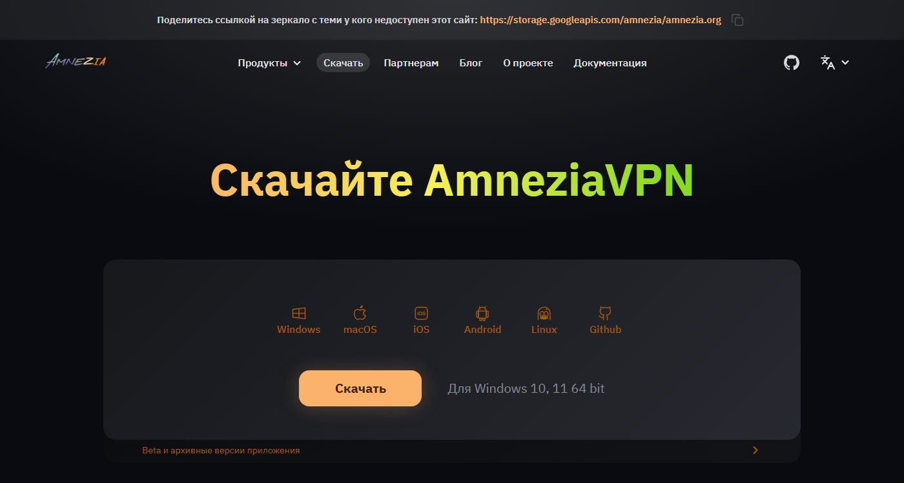

Claude Code — мощный ИИ-инструмент, который пишет код, создаёт сайты и агентов сам или вместе с вами. В части стран прямой доступ к нему ограничен — дело не в самом Claude, а в том, откуда вы к нему обращаетесь. Для этого есть готовое решение: AmneziaVPN, настраивается один раз и без специальных знаний. Уже пользуетесь своим VPN и разбираетесь в теме — используйте его, этот урок необязателен.
Claude Code — это ИИ, который берёт на себя рутину разработки: пишет код, собирает сайты, строит агентов, работает параллельно с вами или полностью вместо вас на понятных задачах. Пользоваться им может любой, но в части стран прямой доступ ограничен геолокацией: сайт видит ваш IP-адрес и по нему определяет, откуда вы заходите.
Первая мысль обычно — поставить браузерное расширение вроде «1-click VPN». Не сработает: оно меняет адрес только для браузера, а Claude Code — отдельная программа, работает мимо браузера. Нужен VPN на уровне всей системы, а не одной вкладки.
AmneziaVPN — программа-клиент: устанавливается на компьютер и умеет подключаться к серверу. Сегодня мы только ставим программу. Сервер арендуем и привяжем к ней в следующем уроке.
Понадобится: компьютер, браузер Chrome, 10 минут. На всякий случай держите под рукой любой VPN, который у вас уже есть — вдруг сайт не откроется сразу.
Вбиваем адрес напрямую в строку браузера. Если страница крутится и не грузится — это блокировка на уровне провайдера. Включите любой VPN (тот же, что для Telegram), обновите страницу — помогает с первого раза.
Кнопка скачивания обычно хорошо заметна на главной странице. Сайт сам определяет вашу систему (Windows / macOS / Linux) и подсвечивает нужный вариант — можно не выбирать вручную.

Для Windows всё однозначно. На Mac бывает два варианта: для чипов Apple (M1/M2/M3) и для Intel. Не знаете свой? Apple (значок) → «Об этом Mac» — там написано в первой же строке.
Двойной клик по скачанному файлу. Windows спросит: «Разрешить приложению вносить изменения на устройстве?» — это стандартная системная защита, не сигнал тревоги. Смело нажимаем «Да». Дальше обычный мастер: «Далее» → «Установить» → ждём.
После установки AmneziaVPN обычно открывается сама. Если ярлык не появился на рабочем столе — найдите программу через «Пуск» и закрепите: правый клик → «Закрепить на панели задач».
Вот пять ситуаций, которые встречаются чаще всего, и как их решить за минуту:
| Что происходит | Решение |
|---|---|
| Сайт вообще не открывается | Включите VPN, попробуйте другую страну сервера. Обычно помогает Германия или Нидерланды. |
| Кнопка скачивания «не жмётся» | Откройте страницу в режиме инкогнито — Ctrl+Shift+N. Скорее всего, блокировщик рекламы мешает загрузке файла. |
| Установщик просит права администратора | Правый клик по файлу → «Запуск от имени администратора». |
| Антивирус ругается на файл | Это ложное срабатывание — Amnezia полностью открытый код (github.com/amnezia-vpn). Добавьте файл в исключения антивируса, но убедитесь что скачивали именно с amnezia.org. |
| Программа не открывается после установки | Перезагрузите компьютер. В 8 случаях из 10 это решает проблему — система не успела завершить регистрацию нового приложения. |
Не двигайтесь дальше, пока не выполнены все пункты. Урок 2 напрямую строится на том, что программа уже стоит и открывается.
✅ Самый непонятный шаг курса — позади. Дальше будет только проще.